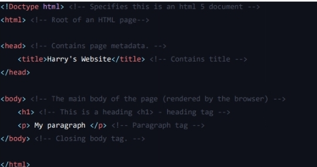
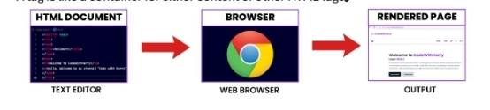

Welcome to the "Ultimate HTML Handbook," your comprehensive guide to mastering HTML
programming. This handbook is designed for beginners and anyone looking to strengthen their
foundational knowledge of HTML, the fundamental language for creating web pages.
PURPOSE AND AUDIENCE
This handbook aims to make web development accessible and enjoyable for everyone. Whether you're a
student new to coding, a professional seeking to enhance your skills, or an enthusiast exploring HTML,
this handbook will definitely be helpful.
STRUCTURE AND CONTENT
• Fundamentals of HTML: Learn the basic structure and elements of HTML.
• Styling with CSS: Understand how to enhance your HTML pages with CSS.
• Interactive Elements: Explore how to create dynamic and interactive content using HTML.
• Advanced Topics: Dive deeper into more complex HTML techniques and best practices.
WHY HTML?
HTML is the backbone of the World Wide Web, providing the structure and semantics for web pages. It is
essential for anyone looking to build a career in web development or simply understand how websites
work.
HTML’s versatility and ease of use make it an ideal starting point for aspiring web developers.
ACKNOWLEDGEMENTS
I extend my gratitude to all the educators, developers, and contributors whose insights and expertise
have shaped the content of this handbook. Special thanks to the web development community for their
continuous support and inspiration.
CONCLUSION
Learning web development through HTML can be both rewarding and empowering. The “Ultimate HTML
Handbook” aims to make your journey into web development smooth and enjoyable. Use this guide as
your companion to master HTML and creating impactful web experiences.
CONTENTS OF HANDBOOK
chapter0-introduction...............4
THEN WHY CSS & JAVASCRIPT...............4
A BEAUTIFUL ANALOGY................4
INSTALLING VS CODE..............4
chapter 1-CREATING OUR FIRST WEBSITE................5
A Basic Html Page................5
Important Notes................5
Comment In HTML................5
Case Sensitivity................6
chapter 1-Practice Set................7
chapter 2-Basic HTML Tags................8
CHAPTER 0-BEAUTIFUL ANALOGY
HTML, which stands for "HyperText Markup Language," is the foundational language of
the web. It's used to create and structure websites. By utilizing HTML tags, we can
define the appearance and layout of a website. With a good grasp of these tags and
their proper usage, creating beautiful websites becomes straightforward and efficient!
THEN WHY CSS AND JAVASCRIPT
HTML is used to define the layout of a page, providing a barebone structure for the
content.
CSS is used to add styling to that barebone page created using HTML
JavaScript is used to program logic for the page layout e.g. What happens when a user
hovers on a text, when to hide or show elements etc.
A BEAUTIFUL ANALOGY
• HTML = Car body (only metal)
• CSS = Car paint, decoration etc.
• JavaScript = Car engine + Interior logic
We will start learning how to build beautiful websites in this course.
INSTALLING VS CODE
We can use any text editor of our choice. Here I am using VS Code because it is
lightweight, opensource & from Microsoft.
NOTE:You can write HTML even in Notepad. Text editors like VS Code just makes these
things easier.
*FOR BETTER UNDERSTANDING I MAKE FULL VIDEO ON CHAPTER 0-INTRODUCTION CLICK ON PICTURE AND GET FULL VIDEO
CHAPTER 1-CREATINGOUR FIRST WEBSITE
We start building a website by creating a file named index.html. index.html is a special
filename which is presented when the website root address is typed.
A BASIC HTML PAGE

A tag is like a container of other HTMLtags.

IMPORTANT NOTES
• head & body tags are children of HTML tag
• HTML is the parent of head & body tags.
• Most of the HTML elements have opening & closing tag with content in between
opening & closing tags.
• Some HTML tags have no content. These are called Empty elements e.g.
• We can either use .htm or .html extension.
• you can use “inspect element” or “view page source” option from Chrome to
look into a website’s HTML Code.
FOR IMPORTANT NOTES YOU SHALL GO TO code with harry.com here you get all language's imp notes free
FOR YOUR PRACTICE I MAKE A FREE CODING FOLDER NAME code full explanation CODE FULL EXPLANATION WITH S